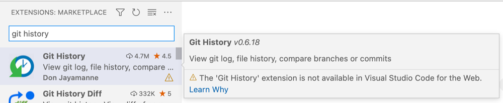
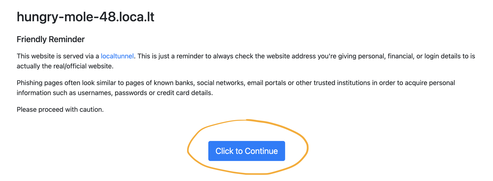

Web Extensions
Visual Studio Code can run as an editor in the browser. One example is the github.dev user interface reached by pressing . (the period key) when browsing a repository or Pull Request in GitHub. When VS Code is used in the Web, installed extensions are run in an extension host in the browser, called the 'web extension host'. An extension that can run in a web extension host is called a 'web extension'.
Web extensions share the same structure as regular extensions, but given the different runtime, don't run with the same code as extensions written for a Node.js runtime. Web extensions still have access to the full VS Code API, but no longer to the Node.js APIs and module loading. Instead, web extensions are restricted by the browser sandbox and therefore have limitations compared to normal extensions.
The web extension runtime is supported on VS Code desktop too. If you decide to create your extension as a web extension, it will be supported on VS Code for the Web (including vscode.dev and github.dev) as well as on the desktop and in services like GitHub Codespaces.
Web extension anatomy
A web extension is structured like a regular extension. The extension manifest (package.json) defines the entry file for the extension's source code and declares extension contributions.
For web extensions, the main entry file is defined by the browser property, and not by the main property as with regular extensions.
The contributes property works the same way for both web and regular extensions.
The example below shows the package.json for a simple hello world extension, that runs in the web extension host only (it only has a browser entry point):
{
"name": "helloworld-web-sample",
"displayName": "helloworld-web-sample",
"description": "HelloWorld example for VS Code in the browser",
"version": "0.0.1",
"publisher": "vscode-samples",
"repository": "https://github.com/microsoft/vscode-extension-samples/helloworld-web-sample",
"engines": {
"vscode": "^1.74.0"
},
"categories": ["Other"],
"activationEvents": [],
"browser": "./dist/web/extension.js",
"contributes": {
"commands": [
{
"command": "helloworld-web-sample.helloWorld",
"title": "Hello World"
}
]
},
"scripts": {
"vscode:prepublish": "npm run package-web",
"compile-web": "webpack",
"watch-web": "webpack --watch",
"package-web": "webpack --mode production --devtool hidden-source-map"
},
"devDependencies": {
"@types/vscode": "^1.59.0",
"ts-loader": "^9.2.2",
"webpack": "^5.38.1",
"webpack-cli": "^4.7.0",
"@types/webpack-env": "^1.16.0",
"process": "^0.11.10"
}
}
Note: If your extension targets a VS Code version prior to 1.74, you must explicitly list
onCommand:helloworld-web-sample.helloWorldinactivationEvents.
Extensions that have only a main entry point, but no browser are not web extensions. They are ignored by the web extension host and not available for download in the Extensions view.

Extensions with only declarative contributions (only contributes, no main or browser) can be web extensions. They can be installed and run in VS Code for the Web without any modifications by the extension author. Examples of extensions with declarative contributions include themes, grammars, and snippets.
Extensions can have both browser and main entry points in order to run in browser and in Node.js runtimes. The Update existing extensions to Web extensions section shows how to migrate an extension to work in both runtimes.
The web extension enablement section lists the rules used to decide whether an extension can be loaded in a web extension host.
Web extension main file
The web extension's main file is defined by the browser property. The script runs in the web extension host in a Browser WebWorker environment. It is restricted by the browser worker sandbox and has limitations compared to normal extensions running in a Node.js runtime.
- Importing or requiring other modules is not supported.
importScriptsis not available as well. As a consequence, the code must be packaged to a single file. - The VS Code API can be loaded via the pattern
require('vscode'). This will work because there is a shim forrequire, but this shim cannot be used to load additional extension files or additional node modules. It only works withrequire('vscode'). - Node.js globals and libraries such as
process,os,setImmediate,path,util,urlare not available at runtime. They can, however, be added with tools like webpack. The webpack configuration section explains how this is done. - The opened workspace or folder is on a virtual file system. Access to workspace files needs to go through the VS Code file system API accessible at
vscode.workspace.fs. - Extension context locations (
ExtensionContext.extensionUri) and storage locations (ExtensionContext.storageUri,globalStorageUri) are also on a virtual file system and need to go throughvscode.workspace.fs. - For accessing web resources, the Fetch API must be used. Accessed resources need to support Cross-Origin Resource Sharing (CORS)
- Creating child processes or running executables is not possible. However, web workers can be created through the Worker API. This is used for running language servers as described in the Language Server Protocol in web extensions section.
- As with regular extensions, the extension's
activate/deactivatefunctions need to be exported via the patternexports.activate = ....
Develop a web extension
Thankfully, tools like TypeScript and webpack can hide many of the browser runtime constraints and allow you to write web extensions the same way as regular extensions. Both a web extension and a regular extension can often be generated from the same source code.
For example, the Hello Web Extension created by the yo code generator only differs in the build scripts. You can run and debug the generated extension just like traditional Node.js extensions by using the provided launch configurations accessible using the Debug: Select and Start Debugging command.
Create a web extension
To scaffold a new web extension, use yo code and pick New Web Extension. Make sure to have the latest version of generator-code (>= generator-code@1.6) installed. To update the generator and yo, run npm i -g yo generator-code.
The extension that is created consists of the extension's source code (a command showing a hello world notification), the package.json manifest file, and a webpack configuration file.
src/web/extension.tsis the extension's entry source code file. It's identical to the regular hello extension.package.jsonis the extension manifest.- It points to the entry file using the
browserproperty. - It provides scripts:
compile-web,watch-webandpackage-webto compile, watch, and package.
- It points to the entry file using the
webpack.config.jsis the webpack config file that compiles and bundles the extension sources into a single file..vscode/launch.jsoncontains the launch configurations that run the web extension and the tests in the VS Code desktop with a web extension host (settingextensions.webWorkeris no longer needed)..vscode/task.jsoncontains the build task used by the launch configuration. It usesnpm run watch-weband depends on the webpack specificts-webpack-watchproblem matcher..vscode/extensions.jsoncontains the extensions that provide the problem matchers. These extensions need to be installed for the launch configurations to work.tsconfig.jsondefines the compile options matching thewebworkerruntime.
The source code in the helloworld-web-sample is similar to what's created by the generator.
Webpack configuration
The webpack configuration file is automatically generated by yo code. It bundles the source code from your extension into a single JavaScript file to be loaded in the web extension host.
const path = require('path');
const webpack = require('webpack');
/** @typedef {import('webpack').Configuration} WebpackConfig **/
/** @type WebpackConfig */
const webExtensionConfig = {
mode: 'none', // this leaves the source code as close as possible to the original (when packaging we set this to 'production')
target: 'webworker', // extensions run in a webworker context
entry: {
extension: './src/web/extension.ts', // source of the web extension main file
'test/suite/index': './src/web/test/suite/index.ts' // source of the web extension test runner
},
output: {
filename: '[name].js',
path: path.join(__dirname, './dist/web'),
libraryTarget: 'commonjs',
devtoolModuleFilenameTemplate: '../../[resource-path]'
},
resolve: {
mainFields: ['browser', 'module', 'main'], // look for `browser` entry point in imported node modules
extensions: ['.ts', '.js'], // support ts-files and js-files
alias: {
// provides alternate implementation for node module and source files
},
fallback: {
// Webpack 5 no longer polyfills Node.js core modules automatically.
// see https://webpack.js.org/configuration/resolve/#resolvefallback
// for the list of Node.js core module polyfills.
assert: require.resolve('assert')
}
},
module: {
rules: [
{
test: /\.ts$/,
exclude: /node_modules/,
use: [
{
loader: 'ts-loader'
}
]
}
]
},
plugins: [
new webpack.ProvidePlugin({
process: 'process/browser' // provide a shim for the global `process` variable
})
],
externals: {
vscode: 'commonjs vscode' // ignored because it doesn't exist
},
performance: {
hints: false
},
devtool: 'nosources-source-map' // create a source map that points to the original source file
};
module.exports = [webExtensionConfig];
Some important fields of webpack.config.js are:
- The
entryfield contains the main entry point into your extension and test suite.- You may need to adjust this path to appropriately point to the entry point of your extension.
- For an existing extension, you can start by pointing this path to the file you're using currently for
mainof yourpackage.json. - If you do not want to package your tests, you can omit the test suite field.
- The
outputfield indicates where the compiled file will be located.[name]will be replaced by the key used inentry. So in the generated config file, it will producedist/web/extension.jsanddist/web/test/suite/index.js.
- The
targetfield indicates which type of environment the compiled JavaScript file will run. For web extensions, you want this to bewebworker. - The
resolvefield contains the ability to add aliases and fallbacks for node libraries that don't work in the browser.- If you're using a library like
path, you can specify how to resolvepathin a web compiled context. For instance, you can point to a file in the project that definespathwithpath: path.resolve(__dirname, 'src/my-path-implementation-for-web.js'). Or you can use the Browserify node packaged version of the library calledpath-browserifyand specifypath: require.resolve('path-browserify'). - See webpack resolve.fallback for the list of Node.js core module polyfills.
- If you're using a library like
- The
pluginssection uses the DefinePlugin plugin to polyfill globals such as theprocessNode.js global.
Test your web extension
There are currently three ways to test a web extension before publishing it to the Marketplace.
- Use VS Code running on the desktop with the
--extensionDevelopmentKind=weboption to run your web extension in a web extension host running in VS Code. - Use the @vscode/test-web node module to open a browser containing VS Code for the Web including your extension, served from a local server.
- Sideload your extension onto vscode.dev to see your extension in the actual environment.
Test your web extension in VS Code running on desktop
To use the existing VS Code extension development experience, VS Code running on the desktop supports running a web extension host along with the regular Node.js extension host.
Use the pwa-extensionhost launch configuration provided by the New Web Extension generator:
{
"version": "0.2.0",
"configurations": [
{
"name": "Run Web Extension in VS Code",
"type": "pwa-extensionHost",
"debugWebWorkerHost": true,
"request": "launch",
"args": [
"--extensionDevelopmentPath=${workspaceFolder}",
"--extensionDevelopmentKind=web"
],
"outFiles": ["${workspaceFolder}/dist/web/**/*.js"],
"preLaunchTask": "npm: watch-web"
}
]
}
It uses the task npm: watch-web to compile the extension by calling npm run watch-web. That task is expected in tasks.json:
{
"version": "2.0.0",
"tasks": [
{
"type": "npm",
"script": "watch-web",
"group": "build",
"isBackground": true,
"problemMatcher": ["$ts-webpack-watch"]
}
]
}
$ts-webpack-watch is a problem matcher that can parse the output from the webpack tool. It is provided by the TypeScript + Webpack Problem Matchers extension.
In the Extension Development Host instance that launches, the web extension will be available and running in a web extension host. Run the Hello World command to activate the extension.
Open the Running Extensions view (command: Developer: Show Running Extensions) to see which extensions are running in the web extension host.
Test your web extension in a browser using @vscode/test-web
The @vscode/test-web node module offers a CLI and API to test a web extension in a browser.
The node module contributes an npm binary vscode-test-web that can open VS Code for the Web from the command line:
- It downloads the web bits of VS Code into
.vscode-test-web. - Starts a local server on
localhost:3000. - Opens a browser (Chromium, Firefox, or Webkit).
You can run it from command line:
npx @vscode/test-web --extensionDevelopmentPath=$extensionFolderPath $testDataPath
Or better, add @vscode/test-web as a development dependency to your extension and invoke it in a script:
"devDependencies": {
"@vscode/test-web": "*"
},
"scripts": {
"open-in-browser": "vscode-test-web --extensionDevelopmentPath=. ."
}
Check the @vscode/test-web README for more CLI options:
| Option | Argument Description |
|---|---|
| --browserType | The browser to launch: chromium (default), firefox or webkit |
| --extensionDevelopmentPath | A path pointing to an extension under development to include. |
| --extensionTestsPath | A path to a test module to run. |
| --permission | Permission granted to the opened browser: e.g. clipboard-read, clipboard-write.See full list of options. Argument can be provided multiple times. |
| --folder-uri | URI of the workspace to open VS Code on. Ignored when folderPath is provided |
| --extensionPath | A path pointing to a folder containing additional extensions to include. Argument can be provided multiple times. |
| folderPath | A local folder to open VS Code on. The folder content will be available as a virtual file system and opened as workspace. |
The web bits of VS Code are downloaded to a folder .vscode-test-web. You want to add this to your .gitignore file.
Test your web extension in on vscode.dev
Before you publish your extension for everyone to use on VS Code for the Web, you can verify how your extension behaves in the actual vscode.dev environment.
To see your extension on vscode.dev, you first need to host it from your machine for vscode.dev to download and run.
From your extension's path, start an HTTP server by running npx serve --cors -l 5000:
$ npx serve --cors -l 5000
npx: installed 78 in 2.196s
┌───────────────────────────────────────────────────┐
│ │
│ Serving! │
│ │
│ - Local: http://localhost:5000 │
│ - On Your Network: http://172.19.255.26:5000 │
│ │
│ Copied local address to clipboard! │
│ │
└───────────────────────────────────────────────────┘
Open another terminal and run npx localtunnel -p 5000:
$ npx localtunnel -p 5000
npx: installed 22 in 1.048s
your url is: https://hungry-mole-48.loca.lt/
Important: Now click on the generated URL (https://hungry-mole-48.loca.lt/ in this case) and select Click to Continue.

Finally, open vscode.dev, run Developer: Install Web Extension... from the Command Palette (⇧⌘P (Windows, Linux Ctrl+Shift+P)) and paste the generated URL shown above, https://hungry-mole-48.loca.lt/ in the example, and select Install.
Check the logs
You can check the logs in the console of the Developer Tools of your browser to see any errors, status, and logs from your extension.
You may see other logs from vscode.dev itself. In addition, you can't easily set breakpoints nor see the source code of your extension. These limitations make debugging in vscode.dev not the most pleasant experience so we recommend using the first two options for testing before sideloading onto vscode.dev. Sideloading is a good final sanity check before publishing your extension.
Web extension tests
Web extension tests are supported and can be implemented similar to regular extension tests. See the Testing Extensions article to learn the basic structure of extension tests.
The @vscode/test-web node module is the equivalent to @vscode/test-electron (previously named vscode-test). It allows you to run extension tests from the command line on Chromium, Firefox, and Safari.
The utility does the following steps:
- Starts a VS Code for the Web editor from a local web server.
- Opens the specified browser.
- Runs the provided test runner script.
You can run the tests in continuous builds to ensure that the extension works on all browsers.
The test runner script is running on the web extension host with the same restrictions as the web extension main file:
- All files are bundled into a single file. It should contain the test runner (for example, Mocha) and all tests (typically
*.test.ts). - Only
require('vscode')is supported.
The webpack config that is created by the yo code web extension generator has a section for tests. It expects the test runner script at ./src/web/test/suite/index.ts. The provided test runner script uses the web version of Mocha and contains webpack-specific syntax to import all test files.
require('mocha/mocha'); // import the mocha web build
export function run(): Promise<void> {
return new Promise((c, e) => {
mocha.setup({
ui: 'tdd',
reporter: undefined
});
// bundles all files in the current directory matching `*.test`
const importAll = (r: __WebpackModuleApi.RequireContext) => r.keys().forEach(r);
importAll(require.context('.', true, /\.test$/));
try {
// Run the mocha test
mocha.run(failures => {
if (failures > 0) {
e(new Error(`${failures} tests failed.`));
} else {
c();
}
});
} catch (err) {
console.error(err);
e(err);
}
});
}
To run the web test from the command line, add the following to your package.json and run it with npm test.
"devDependencies": {
"@vscode/test-web": "*"
},
"scripts": {
"test": "vscode-test-web --extensionDevelopmentPath=. --extensionTestsPath=dist/web/test/suite/index.js"
}
To open VS Code on a folder with test data, pass a local folder path (folderPath) as the last parameter.
To run (and debug) extension tests in VS Code (Insiders) desktop, use the Extension Tests in VS Code launch configuration:
{
"version": "0.2.0",
"configurations": [
{
"name": "Extension Tests in VS Code",
"type": "extensionHost",
"debugWebWorkerHost": true,
"request": "launch",
"args": [
"--extensionDevelopmentPath=${workspaceFolder}",
"--extensionDevelopmentKind=web",
"--extensionTestsPath=${workspaceFolder}/dist/web/test/suite/index"
],
"outFiles": ["${workspaceFolder}/dist/web/**/*.js"],
"preLaunchTask": "npm: watch-web"
}
]
}
Publish a web extension
Web extensions are hosted on the Marketplace along with other extensions.
Make sure to use the latest version of vsce to publish your extension. vsce tags all extensions that are web extension. For that vsce is using the rules listed in the web extension enablement section.
Update existing extensions to Web extensions
Extension without code
Extensions that have no code, but only contribution points (for example, themes, snippets, and basic language extensions) don't need any modification. They can run in a web extension host and can be installed from the Extensions view.
Republishing is not necessary, but when publishing a new version of the extension, make sure to use the most current version of vsce.
Migrate extension with code
Extensions with source code (defined by the main property) need to provide a web extension main file and set the browser property in package.json.
Use these steps to recompile your extension code for the browser environment:
- Add a webpack config file as shown in the webpack configuration section. If you already have a webpack file for your Node.js extension code, you can add a new section for web. Check out the vscode-css-formatter as an example.
- Add the
launch.jsonandtasks.jsonfiles as shown in the Test your web extension section. - In the webpack config file, set the input file to the existing Node.js main file or create a new main file for the web extension.
- In
package.json, add abrowserand thescriptsproperties as shown in the Web extension anatomy section. - Run
npm run compile-webto invoke webpack and see where work is needed to make your extension run in the web.
To make sure as much source code as possible can be reused, here are a few techniques:
- To polyfill a Node.js core module such as
path, add an entry to resolve.fallback. - To provide a Node.js global such as
processuse the DefinePlugin plugin. - Use node modules that work in both browser and node runtime. Node modules can do that by defining both
browserandmainentry points. Webpack will automatically use the one matching its target. Examples of node modules that do this are request-light and vscode-nls. - To provide an alternate implementation for a node module or source file, use resolve.alias.
- Separate your code in a browser part, Node.js part, and common part. In common, only use code that works in both the browser and Node.js runtime. Create abstractions for functionality that has different implementations in Node.js and the browser.
- Look out for usages of
path,URI.file,context.extensionPath,rootPath.uri.fsPath. These will not work with virtual workspaces (non-file system) as they are used in VS Code for the Web. Instead use URIs withURI.parse,context.extensionUri. The vscode-uri node module providesjoinPath,dirName,baseName,extName,resolvePath. - Look out for usages of
fs. Replace by using vscodeworkspace.fs.
It is fine to provide less functionality when your extension is running in the web. Use when clause contexts to control which commands, views, and tasks are available or hidden with running in a virtual workspace on the web.
- Use the
virtualWorkspacecontext variable to find out if the current workspace is a non-file system workspace. - Use
resourceSchemeto check if the current resource is afileresource. - Use
shellExecutionSupportedif there is a platform shell present. - Implement alternative command handlers that show a dialog to explain why the command is not applicable.
WebWorkers can be used as an alternative to forking processes. We have updated several language servers to run as web extensions, including the built-in JSON, CSS, and HTML language servers. The Language Server Protocol section below gives more details.
The browser runtime environment only supports the execution of JavaScript and WebAssembly. Libraries written in other programming languages need to be cross-compiled, for instance there is tooling to compile C/C++ and Rust to WebAssembly. The vscode-anycode extension, for example, uses tree-sitter, which is C/C++ code compiled to WebAssembly.
Language Server Protocol in web extensions
vscode-languageserver-node is an implementation of the Language Server Protocol (LSP) that is used as a foundation to language server implementations such as JSON, CSS, and HTML.
Since 3.16.0, the client and server now also provide a browser implementation. The server can run in a web worker and the connection is based on the webworkers postMessage protocol.
The client for the browser can be found at 'vscode-languageclient/browser':
import { LanguageClient } from `vscode-languageclient/browser`;
The server at vscode-languageserver/browser.
The lsp-web-extension-sample shows how this works.
Web extension enablement
VS Code automatically treats an extension as a web extension if:
- The extension manifest (
package.json) hasbrowserentry point. - The extension manifest has no
mainentry point and none of the following contribution points:localizations,debuggers,terminal,typescriptServerPlugins.
If an extension wants to provide a debugger or terminal that also work in the web extension host, a browser entry point needs to be defined.